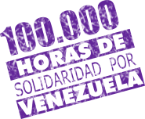

5 de Diciembre a partir de las 9:00 am
Lugar de concentración Parque Infantil al lado del
Zoológico de Paraguaná
Cuota No hay cobro de cuota
Cada participante deberá llevar su vianda para almorzar. Se emitirá certificado digital para cada participante.
Objetivo de la Actividad
Esta es una actividad donde las inquietudes de los scouts, las experiencias de intercambio y el servicio activo, permitirá un crecimiento que los acerque al objetivo final de formarse como ciudadanos activos, alegres y comprometidos con la sociedad; transformando la realidad en su área de influencia, compartiendo con las personas que encontrarán en el camino e influenciándolos a la acción de Construir un Mundo Mejor.
Para este año tenemos propuesto finalizar con la recuperación de la Mezzanina del Museo de Paraguaná y del área de Mi Pequeño Planeta, en el Zoológico de Paraguaná.
Objetivos Educativos
Area de Desarrollo del Entorno
PREPARACIÓN PARA EL TRABAJO
1º y 2º Etapa (Manada)
- Apoya a la Unidad en su trabajo, para el mantenimiento de local y equipo, sin requerir que se le ordene.
- Ayuda a los más jóvenes a prepararse para trabajar en el mantenimiento del local y equipo, en forma sistemática.
3º y 4º Etapa (Tropa)
- Escoge su participación en un servicio, tomando en cuenta sus intereses y los demás miembros de la Patrulla.
- Se encarga de ciertos trabajos de mantenimiento, bajo guía de un conocedor.
5º y 6º Etapa (Clan)
- Contribuye al éxito de proyectos de otros miembros de la Unidad, que hagan aportes a mejorar la calidad de vida de otros o propia.
- Demuestra sus capacidades personales para desempeñar cualquier labor que asume, en forma responsable, en su equipo, y con deseos de búsquedaconstante del perfeccionamiento.
Consideraciones
Es una excelente oportunidad para reconocer a las personas, empresas y organizaciones que han apoyado el movimiento en Falcón, incluyendo a los distritos y grupos.
Debe tenerse en cuenta, la participación de organizaciones juveniles ajenas al Movimiento Scout y vinculadas al desarrollo de proyectos sociales dentro de las comunidades. Esto permitirá nutrir a los jóvenes en prácticas alternativas y generar enlaces con otras instituciones.